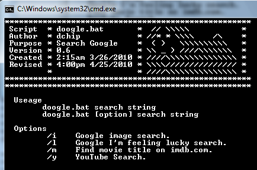
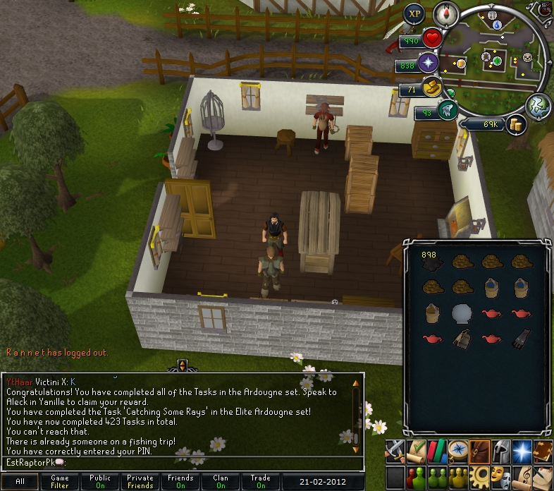
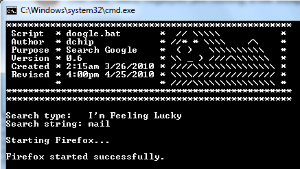

I've been reading them lately to learn batch processing and they have been a great asset.
As a test project I have made a script that opens the web browser to your google search results, from the cmd line.
Here's what I have working at present...
Code: Select all
@echo off
setLocal & enableExtensions
cls
echo ****************************************************
echo Script * doogle.bat * // \\\\\ *
echo Author * dchip * //* * \\\\ /\ *
echo Purpose * Search Google * ( ) \\\\\\\\\\ *
echo Version * 0.6 * \\ _ ) ////\\\\\\\ *
echo Created * 2:15am 3/26/2010 * ////\\\\\\\\\\\\\\\ *
echo Revised * 4:00pm 4/25/2010 * \\\\/////////////// *
echo * * ////\\\\\\\\\\\\\\\ *
echo ****************************************************
echo ****************************************************
echo.
if %1.==. goto :HELP
if "%1"=="/h" goto :HELP
if exist "c:\Program Files\Mozilla Firefox\firefox.exe" (
set BROWSER="c:\Program Files\Mozilla Firefox\firefox.exe"
set BROWSER_NAME=Firefox
) else (
set BROWSER=iexplore
set BROWSER_NAME=Internet Explorer
)
if "%1"=="/i" goto :IMAGE
if "%1"=="/l" goto :LUCKY
if "%1"=="/m" goto :MOVIE
if "%1"=="/y" goto :YOUTUBE
:: "Run default option if no others exist; Standard Google Search..."
set FUNCTION=Google Search
set SEARCHSTR=%*
call :FUNCTION_OUTPUT
start %BROWSER% "http://www.google.com/search?btnG=Google+Search&q=%SEARCHSTR%"
call :MAIN_OUTPUT
goto :EOF
:: "Functions start..."
:HELP
echo Useage
echo doogle.bat search string
echo doogle.bat [option] search string
echo.
echo Options
echo /i Google image search.
echo /l Google I'm feeling lucky search.
echo /m Find movie title on imdb.com.
echo /y YouTube Search.
echo.
goto :EOF
:IMAGE
set FUNCTION=Google Image Search
set SEARCHSTR=%2 %3 %4 %5 %6 %7 %8 %9
call :FUNCTION_OUTPUT
start %BROWSER% "http://www.google.com/images?q=%SEARCHSTR%"
call :MAIN_OUTPUT
goto :EOF
:LUCKY
set FUNCTION=I'm Feeling Lucky
set SEARCHSTR=%2 %3 %4 %5 %6 %7 %8 %9
call :FUNCTION_OUTPUT
start %BROWSER% "http://www.google.com/search?btnI=I'm+Feeling+Lucky&q=%SEARCHSTR%"
call :MAIN_OUTPUT
goto :EOF
:MOVIE
set FUNCTION=Movie Search
set SEARCHSTR=%2 %3 %4 %5 %6 %7 %8 %9
call :FUNCTION_OUTPUT
start %BROWSER% "http://www.google.com/search?btnI=I'm+Feeling+Lucky&q=%SEARCHSTR%+imdb"
call :MAIN_OUTPUT
goto :EOF
:YOUTUBE
set FUNCTION=YouTube Search
set SEARCHSTR=%2 %3 %4 %5 %6 %7 %8 %9
call :FUNCTION_OUTPUT
start %BROWSER% "http://www.youtube.com/results?q=%SEARCHSTR%"
call :MAIN_OUTPUT
goto :EOF
:FUNCTION_OUTPUT
echo Search type: %FUNCTION%
echo Search string: %SEARCHSTR%
echo.
echo Starting %BROWSER_NAME%...
echo.
goto :EOF
:MAIN_OUTPUT
if errorlevel == 0 (
echo %BROWSER_NAME% started successfully.
goto :EOF
) else (
echo %BROWSER_NAME% failed to start!
goto :EOF
)
goto :EOF
:EOF
endLocal
And here is doogle in action...



So far so good (tho i'm sure it could be much better).